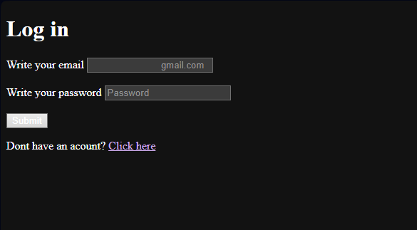
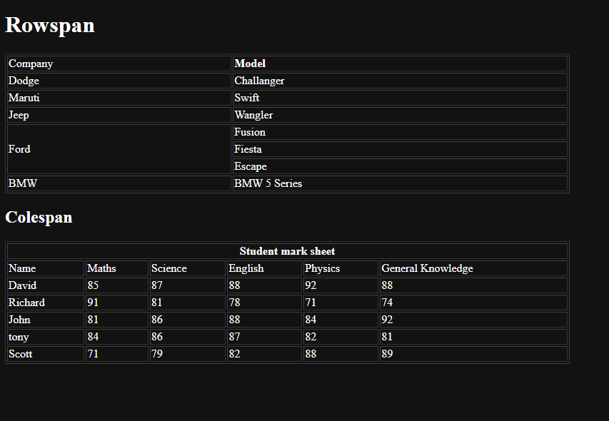

Pop quiz
This image contains one of my hardest projects and longest projects that I made.This project was most time efficient out of all my other projects.This projects is about some trivia questions to test you intelligence and knowledge

This image contains one of my hardest projects and longest projects that I made.This project was most time efficient out of all my other projects.This projects is about some trivia questions to test you intelligence and knowledge
These images contain one of my hardest projects as a begginer.Doing these projects took a toll on me.During this project i had no assisstance from no one and had to refere to google for commands

This project was the easiest out of three.It didnt take a long time
